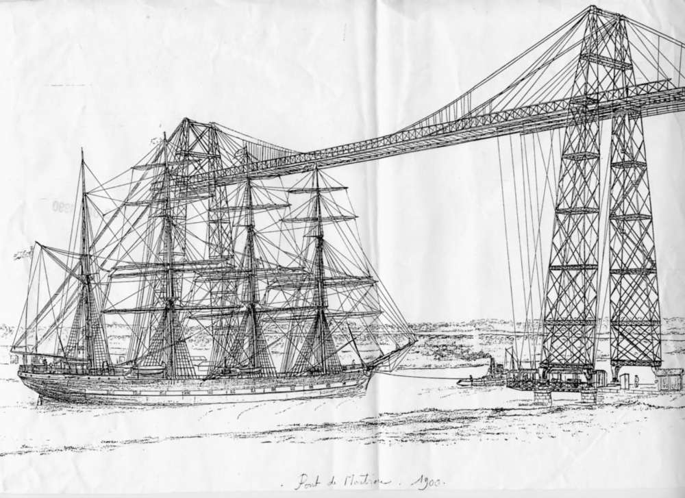
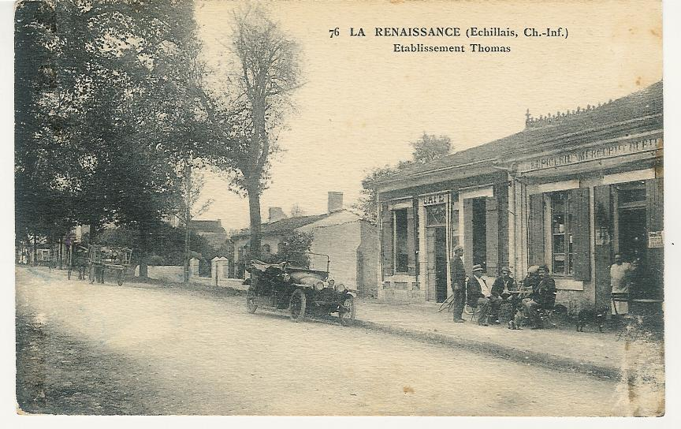
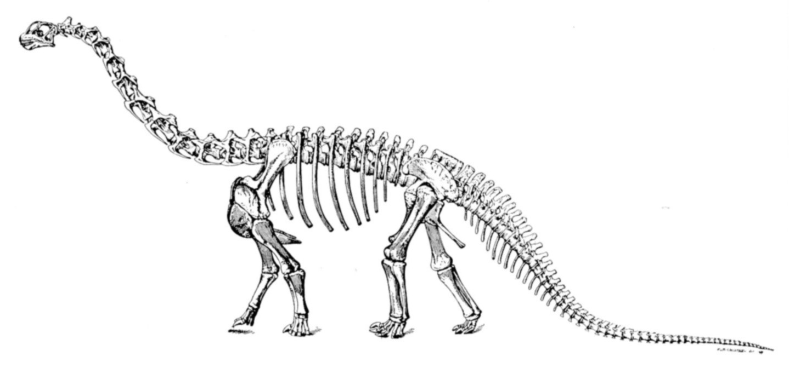

Echillais est une commune de Charente-Maritime très liée à l'économie de Rochefort dont elle est seulement séparée géographiquement par la Charente, à mi-distance entre La Rochelle et Royan et à 15 km à l'est de Fort-Boyard, en bordure du bassin de Marennes -Oléron.
Au siècle précédent, un bac permettait d'accéder à Rochefort où l'arsenal employait beaucoup d'ouvriers.
Le transbordeur inauguré en 1900, a facilité la traversée de la Charente, surtout pour les transports lourds grâce à son accès de plain-pied. Les charrettes de pierres ou de farine, tirées par trois ou quatre chevaux, mais dont un seul était solidaire de la charge en descente, avaient beaucoup de difficultés à gravir ou à descendre les rampes d'accès au bac.
Avant la mise en service du transbordeur, le bac était probablement le principal employeur local, compte tenu de la difficulté des manœuvres et du trafic qui commençait tôt le matin jusqu'au soir très tard.

Une représentation du pont transbordeur du Martrou à Rochefort en 1900. Cet ouvrage d’art métallique permet de relier les deux rives de la Charente, entre les villes de Rochefort et d’Échillais, sans gêner la navigation des cargos qui desservent les ports de Rochefort et de Tonnay-Charente. C’est le dernier pont transbordeur existant en France.
REPRODUCTION « SUD OUEST »
En 1900, l'activité agricole était encore prépondérante malgré la crise amenée par le phylloxéra sur la vigne qui avait supprimé beaucoup de travail puisque l'on peut estimer que le vignoble occupait autrefois un homme par hectare. De 168.000 ha en 1870, la surface en vigne est tombée à 37.201 ha en 1891.
Les prairies remplacèrent la vigne et permirent à chaque ferme familiale de produire du lait de vaches dont le débouché était assuré, soit auprès des familles qui venaient le chercher à la ferme, soit aux commerçants laitiers, soit aux coopératives qui se sont développées rapidement après la création de la première par Eugène Biraud en 1889.
Il avait séjourné en Suisse à la fin de la guerre de 1870 et il avait remarqué le fonctionnement des « Fruitières » qui organisaient la collecte et la transformation du lait.
Chez nous, les fermes n'étaient pas bien grandes, mais étaient très nombreuses et employaient souvent plusieurs "domestiques et servantes", en plus des membres de la famille.
Au début du siècle, chaque village, chaque bourg fourmillait de petites fermes.
Alphonse Berdudeau, époux d'Angèle Fréland, fut fermier, au début du siècle, au Pinier, avant d'aller exploiter la ferme de Bel-Air. Son fils Georges, puis son petit-fils Jacques et son arrière-petit-fils Eric lui ont succédé.
Il avait été remplacé au Pinier par Charles Fréland, puis par Fernand et ensuite par Jean-Claude, le petit-fils.
La ferme de Varaise fut occupée jusqu'en 1950 par la famille Bainson-Menet et depuis par la famille Michaud- Vinet- Michaud, successivement.
Le Bois-Bernard, seigneurerie depuis 1775, vit sa ferme être exploitée successivement par la famille Guillet qui dut céder à la suite du décès prématuré du mari en 1930, à la famille Mallet-Gicquel qui y vécut jusqu'en 1951. A cette date, les propriétaires, héritiers de la famille Juin, la vendirent à Edouard Menet qui exploitait déjà la ferme voisine des Pichaudières. La ferme du Bois-Bernard est occupée depuis 1953 par Lucien Menet.
Le Brossard fut exploité dès 1881 par Auguste Menet, puis successivement par son fils Gustave, sa petite-fille Simone Le Brossard fut exploité dès 1881 par Auguste Menet, puis successivement par son fils Gustave, sa petite-fille Simone Menet avec son mari Henri Michaud et son arrière-petit-fils Robert Michaud.
Le Brossard fut exploité dès 1881 par Auguste Menet, puis successivement par son fils Gustave, sa petite-fille Simone Menet avec son mari Henri Michaud et son arrière-petit-fils Robert Michaud.
Auguste Menet était né aux Pichaudières en 1840, tout comme son père en 1815.
La première pièce officialisant la présence de Menet à Echillais remonte au 7 juillet 1809, lors du décès de Augustin Menet. Il était né le 5 novembre 1755 à St-Saturnin de Séchaud, aujourd'hui commune de Port d'Envaux.
Depuis, sept générations de Menet sont nées aux Pichaudières ; en faisant abstraction que Etienne, Hugo et Aude soient nés à la maternité de Rochefort.
En 1890, la ferme était exploitée par Baptiste Menet et depuis de génération en génération, par Paul, Edouard, Albert et en 1999 par Etienne.
Au Pinier, Leon Menet né en 1854, a eu deux enfants. Camille qui lui succéda mais mourut très jeune et Léontine mariée avec Constant Binson, de Varaise. Leon Menet eut trois petits-enfants. Aucun d'eux n'eut de descendant.
La famille Benoît puis Moreau et Kurstmann, descendante directe de Baptiste Menet a également été présente pendant tout le siècle aux Pichaudières.
La famille Noureau habitait la Noureaudière depuis longtemps, au point que le village portait son nom de famille, jusqu'à ce qu'un anonyme vers 1960, lui retire son "u" et son "e" pour en faire la Noraudière.
Camille Berbudeau exploita la ferme de Martrou jusqu'en 1946, lorsqu'il laissa la place à son frère Gustave pour aller s'installer à St-Hilaire, sur Soubise, où il mourut en 1999. Son fils Robert lui avait succédé sur l'exploitation.
La famille Figier était déjà bien avant 1900 à Montifaut , que ses descendants, Roger Gandouin puis Philippe occupent toujours.
Le domaine de la Limoise est la très ancienne propriété de la famille Duplais, alliée à la famille Rousseau qui occupe toujours la maison bourgeoise, la ferme étant exploitée par Dominique Gandouin puis son fils Sébastien.
Au Château de la Bristière, la présence de la famille de Montalembert, héritière des de Tilly et des Goumard, remonte à François Goumard, seigneur d'Echillais, qui périt en 1577 devant Brouage au cours des Guerres de Religions.
Le château d'Echillais ayant été saccagé à cette époque par les huguenots, la famille s'implanta à la Bristière.
En 1900, la ferme de la Bristière était exploitée par la famille Gay qui fut remplacée dans les années 50 par René Fréland puis depuis par son fils Michel Fréland...
Au Verger, la famille Perrogon habitait en 1900 la ferme qui fut exploitée jusqu'en 1955 par Fernand Berbudeau et depuis par Jacques Nadeau, descendant des Perrogon.
Louis Gorichon arriva au Verger en 1910 et s'y installa pour produire du maraîchage qu'il allait vendre avec son épouse à Rochefort.
La famille Nadeau, déjà présente aux Grèves en 1900 y est encore représentée. Par contre, la famille Gillet du début du siècle a été remplacée par la famille Combeau.
La famille Michaud a été présente durant tout le 20è siècle à la Landonnière.
Le Bois des Brandes accueillait dès 1900 la famille Berbuteau-Guillet jusqu'en 1996.
Pillay était occupé bien avant 1900, par la famille Garlopeau qui y resta jusqu'en 1990. De même, l'Aubraie par la famille Benon.
Aux Chaumes, la famille Fontaine a succédé à la Famille Tranquard.
La famille Jaumier déjà présente au Pigeonnier en 1900 y est toujours représentée en 2018.
La Pierrière était au XIXe siècle, le fief de la famille Gorichon avec 10 enfants, dont Eutrope et Paul qui y restèrent et Louis qui s'installa au Verger.
Dans le bourg d'Echillais, deux vieilles familles ont traversé le siècle sur la même ferme, Jeandeau au centre et Nadeau un peu au Nord.
L'agriculture et l'Arsenal étaient les principales activités à Echillais. Mais les carrières employaient aussi beaucoup de bras. La proximité de la Charente permettait le transport fluvial qui était de loin le transport le plus économique pour la pierre. Les gabarres étaient hâlées par des bœufs ou des chevaux.
Les roches calcaires des fondations de Fort-Boyard proviennent en partie d'Echillais où les exploitants de carrières, les familles Boursier, Durand, Coudin étaient très connues et prospères.
M. Coudin fut maire de 1890 à 1896. Il démissionna en 1896, pour construire la mairie et restaurer l'église. L'entrepreneur ne devait pas être maire.
Son fils et son gendre, M. Jaulin, furent tués dès les premiers mois de la guerre en 1914. En mémoire de ces deux jeunes gens, M.Coudin fit don à la commune du solde de la restauration de l'église qu'ils avaient réalisée ensemble.
La famille Sauvaget travaillait dans l'extraction de la pierre et la maçonnerie et évolua de génération en génération pour arriver à être en 1999 le seul exploitant de carrière à Echillais.
La première automobile, une Delage, fut achetée en 1912 par M. Gaillot.
L'électricité fut installée dans le bourg en 1925, en 110 volts avec deux fils, le village des Pichaudières ne la reçut qu'en 1930.
L'artisanat était très développé.

Carte postale période 1910-1925
N°76, Édition Bergerin la Rochelle.
Vue de deux commerces de la Renaissance :le Café Thomas
l’épicerie de M. Lehoux
REPRODUCTION "archives communales Echillais"
En 1950, nous comptions à Echillais:
Deux maréchaux-ferrants-forgerons, M.Guérin à la Renaissance et M.Besson au Bourg,
Un cordonnier, M.Rivasseau,
Un serrurier, M. Georges Emon, âgé de 88 ans en 2000, s'est équipé de la soudure au chalumeau en 1929.
Un charron, M. Gillet aux Herronelles,
Un menuisier, M. Camille Ravet à la Renaissance,
des menuisiers-charpentiers, au bourg, M.Lucien Couraud.Cette famille a exercé ce métier depuis le XlXe siècle, sur plusieurs générations.
Un maçon, M. Ricou,
Deux boulangeries, M. Valet puis M. Villetorte à la Renaissance et M. Guilloteau au Bourg qui succédait à M.Marty avant d'être remplacé par M. Desalle,
un boucher, M. Caillaud dont les prédécésseurs en remontant dans le temps furent Gendreau, Moreau, Le Gagneux et Bainson au début du siècle dont le fils fut par la suite médecin général de la Marine et maire de Fouras.
Deux épiceries, MM. Roy et Baillou précédés l'un et l'autre par la famille Stick.
Deux coiffeurs, MM. Gilbert Manteau à la Renaissance et Georges Roy au bourg.
Nous trouvions aussi trois salles de bal, au Bourg chez M.Tourneur puis Branchu, à la Maison Blanche chez M.Drouillon et la plus réputée à la Renaissance chez M.Ravallec
Deux cafés à Martrou chez MM. Mercier et Duquerrois pour aider les passagers du transbordeur à supporter le temps d'attente pour embarquer car la queue pouvait être longue.
Au début du siècle, le charron de la Maison Blanche s'appelait Rocheteau. Même si ce nom s'est éteint à Echillais, les descendants s'appellent Lesage, Berbudeau et Hilairet.
A Echillais, les garçons et les filles furent séparés à l'école jusqu'en 1983. Les directrices de l'école des filles, nommées successivement, furent: Mme Maugé, Melle Paul, Melle Rambeau, Mme Joly (1913), Melle Maugé (1928), Melle Gauthier (1931), Mme Violleau Jeanine (1961) et Mme Lesage Paulette de 1961 à 1983.
Les directeurs de l'école des garçons nommés furent: M. Baillou (1890), M. Fredonnet (1899), M. Joly (1913), M. Turque Maurice (1928), M.Grilleau (1950), M. Poisneuf Gilbert (1952), M. Renard Marcel (1957), Mme Renard Gisèle (1977) M. Girard Alain (1987) , M. Rougeon Jack (1993), Mme Poitevin (1998) et M. Dumoulin en 1999.
Le premier maire d'Echillais fut Pierre TREMBLE, en 1790, puis LAGAROSSE en 1792, Jean GUERINEAU en 1793, COMDEMINE en 1806, LAGAROSSE en 1807, CONDEMINE en 1819, DRABLIER en 1822, Ferdinand GOULARD en 1843, Jacques GUILLON en 1847, Pierre EMON en 1848, François GARLOPEAU Président de la commission communale en 1871, DUPLAIS fin 1871, BOULZAT en 1876, CATROU en 1879, Robert PAUL en 1881, Louis COUDIN en 1890 - entrepreneur, il démissionna pour construire la mairie- Henri de MONTALEMBERT de CERS en 1897, DUPLAIS en 1919, Eugène LAGARDE en 1925, René TURQUE en 1940, Henri MICHAUD en 1960, Henri NADEAU en 1965, Claude FAVRE en 1977 et Robert HERONNEAU depuis 1989.
Après les troubles de la Révolution, puis le Concordat signé par Bonaparte, l'église fut ouverte au culte en 1810, mais le service religieux fut assuré jusqu'en 1854 par le curé de St-Agnant.
Le curé Hardy fut le premier en 1854, puis Vallée en 1855, L'Herminier en1868, Forgerit en 1874, Bosc en 1879, Courtois en 1882 et Sottaz de 1885 à 1892.
De 1892 à 1896 le curé doyen Brodu, de St-Agnant, officia à Echillais.
En 1896, l'église retrouva un curé, Vidal, remplacé en 1906 par Barbotin qui écrivit par la suite un intéressant ouvrage " Echillais à travers les Ages" dans lequel j'ai trouvé beaucoup de renseignements. Le curé Barbotin fut remplacé en 1927 par le curé Boulben qui resta jusqu'à l'arrivée du curé Thomas en 1952. Le curé Rétif fut présent à Echillais de 1962 à 2000.
La population d' Echillais a doublé au cours du siècle. (2892 personnes présentes au recencement de 1999 contre 1450 en 1900).
En 1966, un pont à travée levante a remplacé le transbordeur pour traverser la Charente et dès 1991 il a fallu instaurer un pont à passage continu, mais à péage, pour répondre à l'augmentation du trafic routier.
Devant l’isolement d’Echillais et de Soubise que créait le péage, un mouvement protestataire se cristallisant autour de l’ADUA que je représentais, obtint sa suppression en 2003.
L'artisanat est toujours présent mais a beaucoup évolué en métiers et en équipements.
Les services municipaux assurent des fonctions d'entretien des lieux publics et de services bien plus développés qu'en 1900. Les associations assistent les familles, du bébé à la crêche au maintien à domicile des personnes âgées, d'une façon totalement inconnue au début du XXe siècle.
La santé est suivie par un médecin M.HOUY, trois infirmières Mmes PETIT, PINEAU et SCHARLY, deux kinésithérapeutes Mmes BUSCH et GRENON-GONTIER, un dentiste M.DROUILLARD, un pharmacien Mme CLANET et les Ambulances COLBERT et de M.PORTE.
En 2000, nous avons toujours deux boulangeries: La Ruche à la Renaissance et celle de M.William BERNARD rue du Gros Chêne, une boucherie tenue par André HAYS, deux cafés tenus par Mme Branchut et M. Gay, deux garages aux Eronnelles, VOGEL et ECHILLAIS AUTOMOBILES Services et un garage de petites mécaniques- SCOOT MOB 17- rue de l'Ormeau.
Nous comptons trois entreprises de maçonnerie: M.GOURGEAUD, M.HERMANNS et M.OSPITAL, trois menuiseries: MM.COURAUD, M.CHANSIGAUD et M.GASTIEN, trois peintres: M.BRINQUIN, M.PAJOT, M.PRAUD, trois plombiers: M.TETAUD, M.SOULARD et M.CRESPIN, deux électriciens: M.DURAND et M.MAREUIL, un plâtrier M.DUC, les carrières de la famille SAUVAGET, un transporteur M.LONGUEPEE, une entreprise d'élagage M.MENET Etienne, de Travaux Publics MM.MENET frères, un centre de formation avec chiens M.MACQUIN, le toilettage de chiens: Mme GRECH, deux centres d'équitation: le Bois des Brandes et les Ecuries de l'Aubrée, trois coiffeuses: Mme Le POTIER, Mme BERNARD et "NATHALIE" et un horloger M.MASSARD.
Nous trouvons aussi l' Auto-école "ALPHA" route de Soubise et un centre de lavage haute-pression rue du Champ de l'Alouette et "l'Atelier de GINOU" pour impression en relief sur tee-shirts, rue des Groies.
Même si beaucoup de familles n'ont plus rien à voir avec l'agriculture, elles tiennent à connaître et conserver leurs racines rurales.
Les familles anciennes - Fréland, Menet, Benoît, Berbudeau ou Berbuteau, Arnaud ou Renaud selon l'oreille du secrétaire de mairie enregistrant la naissance- sont liées entre elles par le sang ou par le sol.
Le XXe siècle a eu le mérite de favoriser le travail sur la rente. Le rentier vivait mieux en 1900 que l'ouvrier. Quoique l'on peut se demander en voyant l'évolution de la bourse si l'on y revient pas ?
Par voie de conséquence, la société était cloisonnée à un point que l'on n'imagine plus aujourd'hui. En 1900, le petit propriétaire n'aurait pas donné de bon cœur sa fille au fils du fermier et surtout pas au domestique, tout comme le médecin ou le notaire n'aurait pas accepté pour bru la fille du paysan, même s'il avait été propriétaire !
L'instruction pour tous, la professionnalisation de toutes les branches de l'économie ont donné leur chance aux gens courageux et entreprenants.
Les gens nés dans la première moitié du siècle ont pris la France avec des pelles, des pioches et des brouettes et la remettent en 1999 équipées de machines-outils gérées par ordinateurs. Quels progrès dans les conditions de travail en 100 ans !
Dommage que nous n'ayons pas été aussi performants pour la répartition du travail et des revenus!
Pourtant, tout a été réussi pour une France heureuse !
La nourriture est abondante, au point de se permettre le luxe des jachères subventionnées, d'ailleurs mal vécues par les agriculteurs;
Le personnel enseignant n'a jamais été aussi nombreux et compétent pour former nos jeunes;
Le corps médical a une très grande compétence et assume la prise en charge de toute la population, de la grossesse au centenaire;
L'économie française est capable d'assurer tous ses besoins vitaux , mais les acteurs économiques se battent entre eux pour obtenir chacun une part du gâteau plus grosse que celle de son voisin, tout en portant haut fier les symboles fondateurs de notre culture "Liberté-Egalité-Fraternité" ! Et les plus faibles se partagent les miettes !
A ces ouvriers et ces paysans du début du siècle, n'oublions pas d'associer les instituteurs, dont l'ambition était d'instruire les enfants pour en faire des citoyens et des professionnels avertis.
Autant par l'exemple que par leur travail et leur savoir, ils ont formé et éduqué les générations.
En cette fin de siècle, nous profitons à plein de leur formation. Mais l'embourgeoisement qui s'en est suivi nie les valeurs qu'ils inculquaient. En effet, aujourd'hui ils ne pourraient plus exercer leur métier dans la mesure où les parents ne leur délégueraient plus l'autorité. Pire, les parents apprennent aux enfants à se méfier de l'enseignant. Que peut apprendre un enfant s'il doute des faits… et gestes de son 'maître' ?
Le corps enseignant, laïque ou privé, qui n'a pas exclu l'enseignant incapable ou pervers, tout comme les magistrats qui ont condamné l'institutrice pour avoir giflé un gamin effronté et violent, ont préparé les zones de 'non-droit', chacun à leur façon. Et ils ont rempli les prisons !
La Mort du Seigneur d'ECHILLAIS
Histoire Locale de SOUBISE de 1900 à 2000
Soubise est une commune de Charente-Maritime très liée à l'économie de Rochefort dont elle est seulement séparée géographiquement par la Charente et proche du bassin ostréicole de Marennes-Oléron.
Soubise disposait au siècle précédent d'un bac pour accéder à Rochefort où l'arsenal employait beaucoup d'ouvriers.
Le transbordeur inauguré en 1900, a facilité la traversée de la Charente, surtout pour les transports lourds grâce à son accès de plain-pied. Les charrettes de pierres ou de farine, tirées par trois ou quatre chevaux, mais dont un seul était solidaire de la charge en descente, avaient beaucoup de difficultés à gravir ou à descendre les rampes d'accès au bac.
Avant la mise en service du transbordeur, le bac était probablement le principal employeur local, compte tenu de la difficulté des manœuvres et du trafic qui commençait tôt le matin jusqu'au soir très tard. Avant d’être automoteur, le bac consistait en une barge transportant les personnes et les marchandises tractée par un remorqueur à vapeur qui prenait de la vitesse pour la lancer vers l’embarcadère opposé et permettre le débarquement. Le courant sur la Charente et la marée montante ou descendante compliquaient la manœuvre. Il m’a été raconté que, quand la barge n’avait pas assez d’élan, elle se trouvait emporter par le courant et le remorqueur à vapeur ne pouvait la rattraper que plusieurs kilomètres en amont ou en aval pour l’accrocher et la ramener. Cet équipement a été remplacé par un bac automoteur entre les deux guerres.
Louis Brocas né en 1925, m’a raconté que c’est son père qui est allé chercher ce remorqueur en Mer du Nord en longeant les côtes pour revenir.
En 1900, l'activité agricole était encore prépondérante malgré la crise amenée par le phyloxéra sur la vigne qui avait supprimé beaucoup de travail puisque l'on peut estimer que la vignoble occupait autrefois un homme par hectare. De 168.000 ha en 1870, le vignoble de la Charente-Inférieure est tombé à 37.201 en 1891.
Le personnel de maison était important et la principale charge pour le "maître" consistait à le nourrir. Pour cela, toutes les maisons bourgeoises, par exemple celles de Soubise adossées au coteau face au Grand Ecourt, avaient toutes de grands jardins et on élevait aussi un cochon, une vache ou deux pour le lait, le beurre et le fromage et même souvent un cheval pour la voiture.
Les fermes n'étaient pas bien grandes, mais étaient très nombreuses et employaient souvent plusieurs "domestiques et servantes", en plus des membres de la famille.
A part quelques grands domaines tels que La Touche et la Rouillasse qui étaient gérés par la famille BENON ou les Epaux, St-Hilaire et le Griffet par la famille MAILLET jusqu'en 1899.
A cette date, la famille DURAND arrive de Tonnay-Charente pour gérer St-Hilaire et le Griffet, avec neuf enfants dont six garçons. L'ensemble sera vendu en 1912 à plusieurs acquéreurs.
La famille Durand acheta une partie de St-Hilaire, dont le pigeonnier, une fuie du temps des seigneurs, et la famille Chénereau acquit l'autre partie tandis que la famille Vaillant-Ambert vint de St-Coutant s'installer au Griffet.
La guerre de 1914/18 endeuilla sévèrement ces hameaux: trois fils Durand périrent pendant la guerre, un quatrième succombera à ses blessures dix ans après; Louis Ambert, du Griffet, est tué en septembre 1918 dans la Somme.
Ce n'est qu'un exemple du carnage de la grande guerre dont nos monuments aux morts conservent la liste des noms : 52 à Echillais et 43 à Soubise pour respectivement 1450 et 722 habitants.
Au début du siècle, chaque village, chaque bourg fourmillait de petites fermes. Soubise en comptait encore une dizaine dans son centre-bourg en 1945/1950, allant de deux ou trois vaches à une douzaine. On peut citer les familles Gachignat, Prunier, David, Mousset, Balais, Boeffier, Rateau, Petit, Martineau, Betbeder qui vendaient du lait frais à leurs voisins. Rappelons que sans réfrigération ni congélation, le lait frais caillait vite surtout en été.
A la Morneterie, dans les années 1910/1920, les familles Juillet -huit filles-, Bouchet -sept enfants-, Baillou, Clémensseau, Tessier, Billet, avaient chacune quelques vaches et cultivaient quelques terres pour leur subsistance. La vie était très dure, surtout pour les familles nombreuses où chaque nouvelle grossesse amenait une bouche de plus à nourrir, selon l'expression de l'époque. Les allocations familiales n'ont été instaurées que dans les années trente.
A la Mingolière, la famille Bertrand, dont le gendre fut René Jauneau, avait aussi quelques vaches tout comme les familles Manteau et Panier.
A l'Orange, la famille Bitaud céda la ferme à la famille Bourguignon dont la fille Yvonne épousa en 1946 Raymond Chatelier dont le fils Robert, puis le petit-fils Philppe ont pérennisé et développé l’exploitation agricole.
Au Renfermis, la famille Roux vers 1920 succéda à la famille David. Au Chatelet- dit aussi le Pigeonnier - Fernand Berbudeau succéda en 1953 à la famille Couteau. Au Moulin Neuf, la famille Chataigner, puis le gendre Maurice Baudry, y résida jusqu'en 1995.
A la Rouillasse, la famille Simonneau puis les frères Aubin précédèrent Robert Vaudon, et la famille Benon était déjà là sur l'autre partie en 1900.
Les descendants de la famille Maillet qui exploitait les Epaux, St-Hilaire et le Griffet jusqu'en 1899, vivent actuellement au Cloane.
L'autre ferme du Cloane fut occupée successivement par les familles Louineau, Brisseau puis Coutant de 1929 à 1945, Train-Belet de 1945 à 1980. A la suite du décès accidentel de Mme Train et des deux enfants du couple, M.Train céda l’exploitation.
Depuis cette époque, la maison n'est plus habitée mais la propriété est exploitée par la famille Dromer-Menet.
La famille Leblanc succéda au Péré-Maillard, à la fin des années trente, à la famille Pouvreau. Marcel Jauneau y résida de 1955 à 2010.
Les Epaux furent achetés vers 1930 par M.Praud, arrière- grand-père de l'actuel propriétaire, M.Mallet.
A la Bouillée, très ancienne demeure occupée au 12e siècle par les Templiers, une autre famille Praud,- pas parente avec celle des Epaux-, dont la fille épousa Auguste Jauneau, précéda les familles Bouchet puis Martin.
Au Grand-Parc, la ferme de la famille Noureau évolua dans les années trente vers une laiterie tenue par la génération suivante, M et Mme Tranquard, puis par leur fils Georges jusqu'en 1980 et qui y créera un centre frigorifique toujours opérationnel en 2018.
Toujours au Grand Parc, il y avait une seconde ferme, à l'est de la route, occupée dans la première moitié du siècle par la famille Embert. Cette ferme a totalement disparue, jusqu'à la dernière pierre, tout comme l'église Notre Dame des Epaux qui se trouvait, avec son cimetière, entre la Bouillée et les Epaux.
Le domaine de la Vieille Grolière appartenait à la famille Chénereau . La dernière descendante en fit don à la commune de Soubise vers 1970. Quelques années plus tard, le domaine disparut lors du transfert de la base aérienne 721 de Rochefort vers Soubise/St-Agnant.
L'artisanat est toujours présent mais a beaucoup évolué en fonctions et en équipements.
Les services municipaux assurent des fonctions d'entretien des lieux publics et de services bien plus développés qu'en 1900. Les associations assistent les familles, du bébé à la crêche au maintien à domicile des personnes âgées, d'une façon totalement inconnue au début du XXe siècle.
Soubise, sans être le chef-lieu du canton, se trouve au centre de la presqu'île finissant à Port des Barques, et au début du siècle avec le bac, était à deux pas de la base aéronavale. Entre les deux guerres, les marins de l'aéronautique étaient logés dans des baraquements près de la Charente, face à Soubise où il y avait bal, soit chez Laporte sur le port, soit chez Bordas puis Rousselot devant la mairie.
Les marins préféraient les bals de Soubise à ceux de Rochefort ou de la Renaissance parce que - officiellement- le bac ne fonctionnait pas la nuit, donc les patrouilles militaires ne venaient pas les embêter.
Mais les gens de Soubise, en bons commerçants, s'arrangeaient pour leur faire traverser la Charente à l'aller comme au retour. La personne qui m'a rapporté ces faits a connu son mari comme cela.
Vers 1914, nous avions de trés nombreux artisans et commerçants tels le cordier M. Feytis et les épiciers Abelin et Rousseau.
Soubise héberge depuis le XIXe siècle, un notaire, un pharmacien et deux médecins, qui étaient respectivement en 1950 ; Me Hollande, M.Cornuaud, Dr Emon et le Dr de Fleurian. Mme Bonneau puis Mme Emon furent sage-femmes.
A cette époque, il y avait quatre épiceries tenues par les familles Benoît, Clerfeuille et Rousselot. L'Essor était tenu par un gérant, M. Santonni. Avant 1940, il y avait eu les épiceries Rousseau, Bordas, Bernard et Varache.
Nous trouvions aussi deux boucheries : MM. Billou et Régnier,
Une boulangerie : M.Supplisson puis M. Papin et M.Rolland;
Un bourrelier : M.Démier successeur de Narcisse et de Geleau;
Un charron : M.Fillon
Un forgeron : M. Botton successeur de M.Rateau;
Un maçon : M.Doucin successeur de M.Guignard;
Un peintre : M. Balais
Un coiffeur-homme : M.Phélippot succédant à M.Ancelin et Gras qui exerçait en 1920.
Deux salons de coiffure-dames tenus par Mmes Ancelin et Lafon.
Et une briquetterie-four à chaux au Four de l'Orange ou Four du Diable tenue par la famille Lafon qui l’avait créée pendant la guerre de 1914/18..
Le directeur de l'école, qui était déjà mixte, pendant la guerre de 1914/18, se nommait M.Justin Durand. Son épouse, Laure, et Mme Barret enseignaient aussi.
M.Durand fut remplacé à la Direction de l'école par M.Paillé. M.et Mme Chauvière exercèrent de 1934 à 1954. M.Combeau, M. et Mme Lafforgue, M. et Mme Guionie, M.Talma, Melle Balloteau, Mme Filippelli puis M.Nicolas et Mme Delanoue leur succédèrent à la direction de l'école de Soubise.
Depuis les années 70, existe l'école maternelle dont Mme Cailhol, Mme Ratier, Mme Gausserand assurèrent la direction confiée à Mme Gardrat en poste en 2000.
Au début du siècle, toutes les fermes produisaient du lait de vaches et la collecte se faisait, sans aucune possibilité de refroidissement, avec une carriole tirée par un cheval. Par conséquent le périmètre de collecte était restreint, aussi nous avions, vers 1950, trois laiteries : aux Lauriers, au Grand-Parc et à la Laiterie actuellement ZI du chemin Vert.
Soubise comptait une quarantaine de fermes en 1950 et en 1999, il n'en restait qu'une demi-douzaine et pratiquement qu'une seule laiterie pour toute la Charente-Maritime.
Le premier maire de Soubise, M. BELLILE fut installé le 3 frimaire de l'an IX ; il était "maire-provisoire" et en fait, la même année il y eut successivement aussi M.TESTUT et M.PINASSEAU.
Puis en 1809, M.GOURBEIL, 1812 M.FILLIOU, 1814 retour de M.GOURBEIL,
1815 M.DUBURG, 1816 M.BOURREAU, fin 1816 M.DELEAU, 1822 M.POUVREAU, 1826 M.SAVIGNY médecin, survivant du radeau de la Méduse, 1835 M.PINASSEAU, 1838 M.JOUSSEROUT, 1843 M.PINASSEAU, 1845 Dr BARBRAU, 1851 M.THIBAULT, 1852 M.MERAUD, 1865 M.BRETHEAU, 1866 M.GABORIT, 1871 M.SALLE, 1873 M.DYVORNE, 1881 M.VINET, 1882 M.BOEFFIER, 1888 M.LECLERC Hypolyte, 1904 M.FURGIER Hilaire, 1906 M.BERBUDEAU Charles, 1910 Dr EMON William, 1947 M.SIMONET Auguste, 1948 Mme EMON Camille, 1953 Dr de FLEURIAN Henri, 1955 Me DROUET Henri et en 1995 M.CHATELIER Robert.
En 1999, la population a tellement crû en passant de 722 habitants en 1900 à 1220 en 1999, que la base agricole, prépondérante en 1900, est devenue très minoritaire tout en conservant sa place dans l'espace rural.
L'artisanat de Soubise s'est maintenu en évoluant significativement.
La boulangerie est tenue par M.ROLLAND, le bar-tabac par Mme FROMENTAY, le bar-épicerie par Mme JEGUARD, l'Ecomarché par la S.A PAJE, l'atelier de secrétariat "Travodac"par Mme CHARTOIS, le garage par M.DAUNAS, la SOCIETE MULTISERVICE par M. ARGANO, les salons de coiffure par M.BRANGER et Mme MENANTEAU et l'auto-école par M.TREMBLIER.
La Soubisienne, les Ets Lefebvre et Clion vendent des matériaux, la SAUR fournit l'eau potable et les Ets COEURJOLY fraisent des pièces de précision pour l'industrie.
En 2002, nous comptions aussi trois peintres: MM.PERRAULT, VOYER et Déco-moquettes, un électricien M.BOULANGER , un maçon M.LELOUP, l'atelier de réparations de matériel agricole des frères MONROUX, deux transporteurs MM.AUGER et MOUNIER et l'entreprise de travaux publics MAGNE. La Sarl du GRAND-PARC assure le stockage de produits congelés. "Soubise-Plaisance" construit des bateaux, M.CHARON apprend à les piloter et la Chambre de commerce gère l'aérodrome de concert avec la Base Aérienne 721. Me MALLET et son épouse, notaires, encadraient les mutations immobilières. A leur retraite, ils furent remplacés par Me Cecile ANDREU.
Les touristes trouvent accueil à l'Hôtel-Restaurant "le SOUBISE" et à la "MEDINA".
Pour la santé des Soubisiens, nous pouvons compter sur trois médecins: MM.MISSLEN, BAUBEAU et WARTEL, quatre infirmières: Mmes DIBOS, GIRAUD, SALVY et VIRIEU, un dentiste M.TORRENT, un kinésithérapeute M.NEVEU, un pharmacien M.DUMORTIER et une maison de retraite tenue par Mme CHOQUE.
Même si beaucoup de familles n'ont plus rien à voir avec l'agriculture, elles tiennent à connaître et conserver leurs racines rurales.
Les familles anciennes - Fréland, Menet, Benoît, Berbudeau ou Berbuteau, Arnaud ou Renaud selon l'oreille du secrétaire de mairie enregistrant la naissance- sont liées entr'elles par le sang ou par le sol.
Le XXe siècle a eu le mérite de favoriser le travail sur la rente. Le rentier vivait mieux en 1900 que l'ouvrier. Quoique l'on peut se demander en voyant l'évolution de la bourse si l'on n'y revient pas ?
Par voie de conséquence, la société était cloisonnée à un point que l'on n'imagine plus aujourd'hui. En 1900, le petit propriétaire n'aurait pas donné de bon cœur sa fille au fils du fermier et surtout pas au domestique, tout comme le médecin ou le notaire n'aurait pas accepté pour bru la fille du paysan, même s'il avait été propriétaire !
L'instruction pour tous, la professionnalisation de toutes les branches de l'économie ont donné leur chance aux gens courageux et entreprenants.
Les gens nés dans la première moitié du siècle ont pris la France avec des pelles, des pioches et des brouettes et la remettent en 1999 équipées de machines-outils gérées par ordinateurs.
Quels progrès dans les conditions de travail en 100 ans !
Dommage que nous n'ayons pas été aussi performants pour la répartition du travail et des revenus !
Pourtant, tout a été réussi pour une France heureuse !
La nourriture est abondante, au point de se permettre le luxe des jachères subventionnées, d'ailleurs mal vécues par les agriculteurs.
Le personnel enseignant n'a jamais été aussi nombreux et compétent pour former nos jeunes;
Le corps médical a une très grande compétence et assume la prise en charge de toute la population, de la grossesse au centenaire.
L'économie française est capable d'assurer tous ses besoins vitaux, mais les acteurs économiques se battent entre eux pour obtenir chacun une part du gâteau plus grosse que celle de son voisin, tout en portant haut fier les symboles fondateurs de notre culture "Liberté-Egalité-Fraternité" ! Et les plus faibles se partagent les miettes !
A ces ouvriers et ces paysans du début du siècle, n'oublions pas d'associer les instituteurs, dont l'ambition était d'instruire les enfants pour en faire des citoyens et des professionnels avertis.
Autant par l'exemple que par leur travail et leur savoir, ils ont formé et éduqué les générations.
Au début du 21ème siècle, nous profitons à plein de leur formation. Mais l'embourgeoisement qui s'en est suivi nie les valeurs qu'ils inculquaient. En effet, aujourd'hui ils ne pourraient plus exercer leur métier dans la mesure où les parents ne leur délégueraient plus l'autorité. Pire, les parents apprennent aux enfants à se méfier de l'enseignant. Que peut apprendre un enfant s'il doute des faits… et gestes de son 'maître' ?
Le corps enseignant, laïque ou privé, qui n'a pas exclu l'enseignant incapable ou pervers, tout comme les magistrats qui ont condamné l'institutrice pour avoir giflé un gamin effronté et violent, ont préparé les zones de 'non-droit', chacun à leur façon et participent à remplir les prisons.
Les ACCIDENTS d'AVIONS de 1938 à 1945.
Avant 1939, deux avions s'étaient écrasés sur notre secteur : un hydravion dans les côteaux de l'Orange et un biplan entre les Lauriers et les silos de la Coopérative Agricole qui n'étaient pas montés à l'époque.
Début 1940, avant l'arrivée des allemands, un biplan est tombé dans le marais sur la commune de St-Nazaire, entre le Brillouet et la Charente.
En mai 1940, un Biplan CURTIS, a atterri dans le tas de fumier de M.Vergnaud à la Morneterie. L'avion, s'est disloqué et le pilote, dont les jambes flageolaient, a été requinqué par le verre d'eau de vie que lui a donné la voisine, Mme Tessier.
En juin 1940, au moment de la déroute de l'Armée française, les avions se sont repliès vers le Sud pour échapper aux Allemands. L'un deux, un monoplan Caudron-Renault, piloté par Marcel FOURNAT de Port des Barques, venant de Tours est tombé dans les côteaux de l'Orange. Marcel Fournat m'a relaté cet accident en 2011, à l'âge de 91 ans
Un troisième est tombé entre Thionnet et la Lande du Roux, plein sud du Cloane.
Pendant la guerre, vers 1943, lors d'un bombardement de la base sous-marine de la Pallice, une des centaines des forteresses volantes B 17fut touchée par la DCA allemande et perdit de l'altitude. Attaquée par un chasseur allemand, elle se défendait et l'abattait avant d'aller s'écraser dans le pertuis d'Antioche. L'avion allemand tomba à 300 mètres à l'est de la Rouillasse.
A la même époque, un chasseur allemand Messerchmitt 109 s'écrasa à la Sauzaie dans la parcelle de marais aujourd'hui propriété de la commune de St-Agnant.
En avril 1945, une forteresse volante B17 venue bombarder l'île d'Oléron fut abattue par la DCA allemande et s'abîma dans les vases entre l'île et le Chapus. L'équipage fut fait prisonnier par les allemands, conduit à la prison de Royan et s'attendait au pire.
Quelle ne fut pas la surprise de ces officiers, alors qu'ils sont au secret depuis de nombreux jours et ne sont pas au courant de ce qui se passe à l'extérieur, de voir le général allemand ouvrir lui-même la porte de la cellule, se mettre au garde à vous, sortir son révolver de son étui et le tendre au plus gradé d'entre eux en disant " Je suis votre prisonnier".
Deux raisons : la première, ses troupes venaient de capituler, la seconde, il tenait à se rendre à des officiers de l'armée régulière qui respecteraient les conventions de Genève. Sachant que les Allemands avaient fusillé beaucoup de maquisards et de FFI sans respect de ces conventions, il avait fort à craindre de leur part.
Plus dramatique est l'accident survenu à un Libérator qui explosa en vol au cours d'un violent orage en décembre 1945 et s'abattit entre Echillais et Trizay dans le marais près de Pillay et des Chaumes.
Il fit de nombreux morts dont 28 sont inhumés au cimetière de la Marine à Rochefort.
Triste ironie du sort, il s'agissait de soldats canadiens et anglais qui, la guerre terminée, rentraient chez eux !
Le CHATEAU de SOUBISE défendait l'entrée de la CHARENTE.
C'est en juin 1092, que le Château de Soubise apparaît dans les documents historiques à l'occasion d'un terrible et meurtrier incendie.
Ce château avait probablement été construit pour défendre l'entrée de la Charente contre les invasions normandes qui avaient commencé 200 ans plus tôt.
En 1137, il appartient au Duc de Wilhem, de la Maison de Poitiers, père d'Aliénor d'Aquitaine.
Lorsque en 1152, celle-ci se marie avec Henri II, roi d'Angleterre, la région et ses populations passent sous le joug anglais.
Pendant les 260 ans suivants, nul ne peut dire combien de fois le Château de Soubise a changé de mains dont deux fois le 23 aôut 1372. Il était occupé par la Dame de Soubise, Jeanne d'Amboise, veuve de Guy l'Archevêque sire de Parthenay, dont le fils servait dans l'armée anglaise.
Pour le Roi de France, Du Guesclin veut empêcher les anglais de remonter porter des renforts à l'intérieur des terres, par la Charente.
Pour cela, il a besoin de leur prendre le Château de Soubise. Ses troupes assiègent le Château, mais prises à revers par les anglais et capturées, elles sont délivrées le soir même par les espagnols alliés du Roi de France. Et les anglais sont faits prisonniers, dont le Captal de Buch. En effet, celui-ci tout à sa victoire avait déposé l'armure et négligé de poster des sentinelles.
La capture du captal de Buch- chef prestigieux des troupes anglaises- et la conquête du Château de Soubise par Du Guesclin furent décisives pour la reprise en main de la région par CharlesV.
On ne sait quand les anglais reprirent le Château de Soubise, mais on sait qu'ils en furent encore délogés en 1413 et cette fois, définitivement. Ils ont pourtant essayé de revenir puisqu'en 1489, la baronnie de Soubise s'est vu prescrire le renforcement des remparts pour parer à cette éventualité.
La guerre de Cent-Ans terminée, les Anglais partis, la paix aurait pu revenir. Mais les Guerres de Religions arrivent.
La Réforme s'est très rapidement généralisée dans la région puisque vers 1675, il se fait quatre baptêmes protestants pour un catholique.
Soubise et Moëze ont, chacune, leur église réformée dès 1576.
Les protestants détenaient déjà Soubise en 1569, mais en 1570 la garnison est papiste.
En 1585, les protestants reprennent le Chateau tenus par 200 papistes, mais ils en seront délogés en 1586 par la puissante offensive générale du Duc de Mayenne sur la région avec plus de 12.000 hommes.
Les protestants reviennent pourtant la même année 1586, mais ils se font tailler en pièces par les troupes de St-Luc basées à Brouage.
C'est le dernier épisode guerrier du Château de Soubise.
Mais les Rohan, - René II puis Henry et Benjamin seigneurs de Soubise- furent les principaux chefs de la Réforme et tinrent tête au pouvoir jusqu'à la fin du siège de La Rochelle en 1628.
La révocation de l'Edit de Nantes en 1685 par Louis XIV provoqua l'émigration de nombreux protestants et 400 adjurations furent enregistrées dont celle du marquis de Queux de St-Hilaire.
Victor HUGO à Soubise:
C'est en attendant le bac au Café de l'Europe à Soubise le 9 septembre 1843 que Victor Hugo aurait appris la mort de sa fille, Léopoldine, et de son gendre, en lisant le journal "Le Siècle".
Le naufrage de leur voilier, en traversant la Seine, coûta aussi la vie à deux autres personnes, le 4 septembre 1843.
UN DINOSAURE à SOUBISE :
En 1990, Rémy DROMER, agriculteur au Cloane, a mis à jour deux énormes os fossiles qu'il a confiés à la Faculté de Poitiers pour identification.

En fait, ces os proviennent d'un dinosaure herbivore "Camarasaurus" de la famille des "sauropodes" ayant vécu il y a 145 millions d'années, à l'époque du "portandlien/tithonien". Les mesures et le poids : 4 kg pour la vertèbre caudale , 18 et 40 kg pour les deux têtes d'os fossilisés, ont permis d'estimer la taille du dinosaure , à savoir: 3,50 mètres au garrot, 20 mètres de longueur avec la queue, pour un poids de 30 à 40 tonnes !